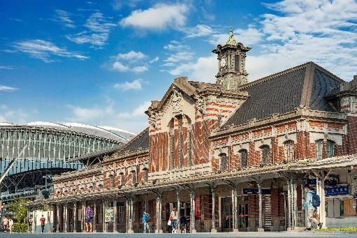
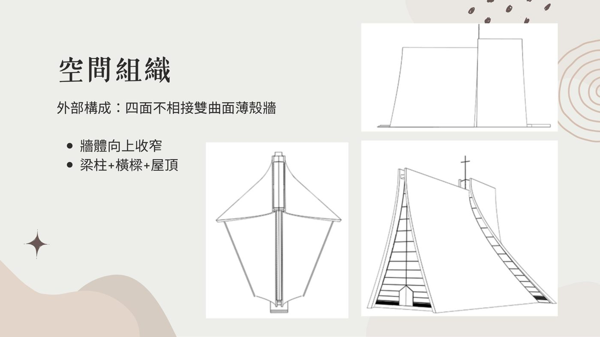
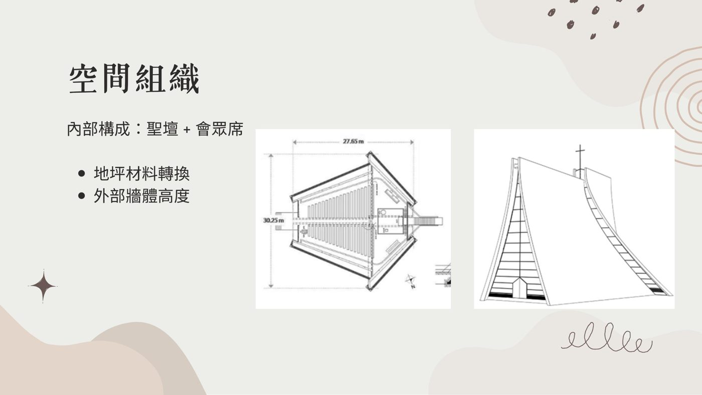

建築概論113 學年下學期
台中火車站：新舊兩座站體
1917 年的紅磚舊站左右對稱、重量向下；2016 年的新站用大跨度鋼構和玻璃帷幕，把舊站包在視野裡。我從身體與尺度、結構與細部兩個角度，比較兩座建築如何回應不同時代的需求。
修建築與藝術概論時寫的幾份觀察：看一座建築怎麼回應它的時代，也用新的工具重新理解藝術。


1917 年的紅磚舊站左右對稱、重量向下；2016 年的新站用大跨度鋼構和玻璃帷幕，把舊站包在視野裡。我從身體與尺度、結構與細部兩個角度，比較兩座建築如何回應不同時代的需求。


分析東海大學路思義教堂的空間組織、動線與結構：四片雙曲面薄殼如何同時回應氣候、預算與「讓全校都看得見」的紀念性，以及兩位建築師如何在現代主義裡放進中國建築的意象。

以達達主義、立體主義、抽象表現主義為題，用生成式 AI 創作三張圖，並記錄每次調整提示詞的原因。《打橋牌的女孩》畫的是我自己：橋牌是興趣，也帶來壓力，所以用深色表現緊繃，用歡呼的手勢表現打好一手牌的快樂。